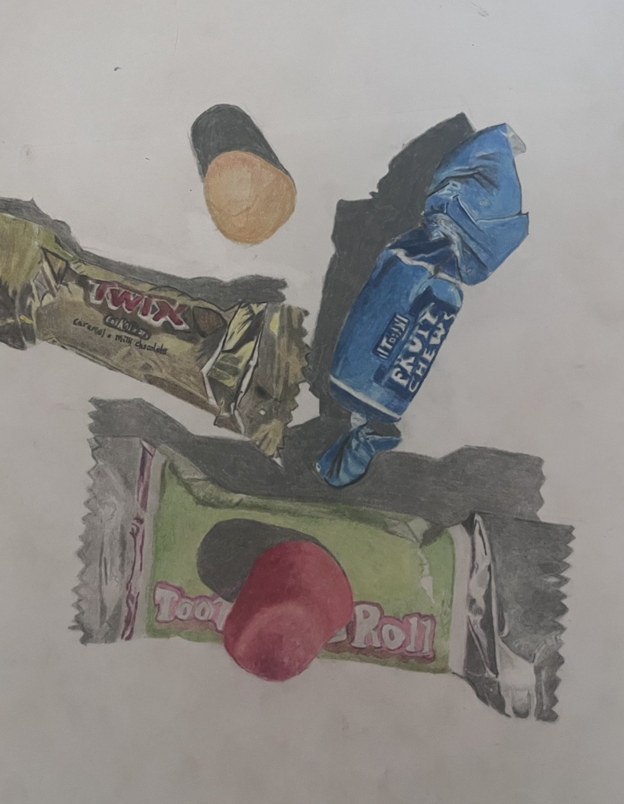

Paint Swashes

My drawing of pain swashes in 2024. This was a study we did of making paint swatches with paint on paper, letting it dry. Then we went and chose an area of the big picture and drew it with graphite showing black and white value.
Candy Drawing
My colored drawing of candy from 2021. I did this piece in high school, and was really impressed with the results. We chose pieces of candy and photographed it and then went and used colord pencils and recreated the image with it.
Charcoal Drawing

My charcoal drawing of cardboard from 2025. This is my most recent piece I did in my 3rd semester at UW-Eau Claire. We made a cardboard piece of a famous art work, and then drew the cardboard piece with charcoal showing texture.